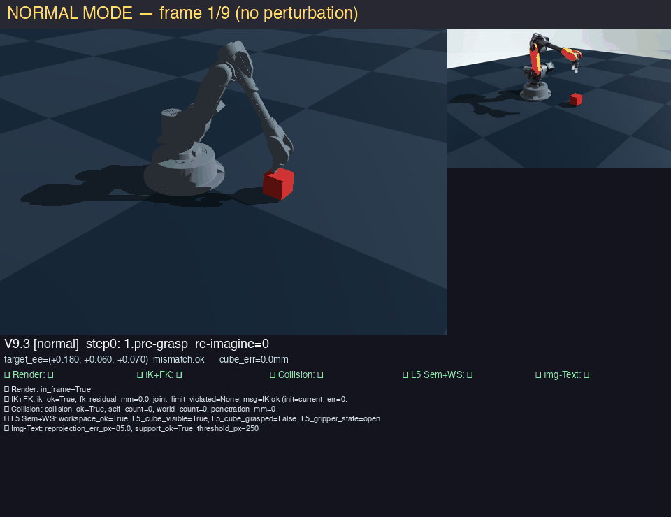
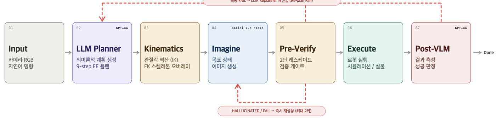
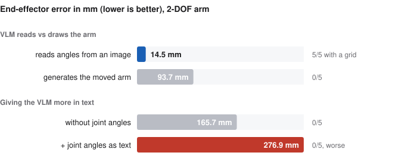

VLM robot commands gated by forward kinematics
VLM 이 낸 로봇 명령을 순기구학으로 실행 전에 거르고, 언어로 준 물리 정보가 왜 도움이 안 되는지 본 연구입니다.
A vision-language model proposes an end-effector target; forward kinematics determines reachability before execution. The pipeline functioned as a filter. The reported result concerns what happened when the VLM was given additional physical information in text.

Pipeline 파이프라인 (발표 슬라이드)

What was tested 무엇을 시험했나
The original idea was to let a VLM imagine the arm at its goal — edit the camera image — and execute toward that picture. Eight controlled experiments, mostly on a 2-DOF planar arm, located where this breaks.

All seven experiments
| experiment | what was varied | result | reading |
|---|---|---|---|
| Hints for image generation | none / target coordinates / joint angles and link lengths / all information | joint angles raised end-effector error 165.7 → 276.9 mm; 0/5 in both | more information made it worse |
| Reading vs generating | read angles from an image vs generate the moved arm | reading 14.5 mm (5/5 with a grid) vs generating 93.7 mm (0/5) | the VLM can read geometry but not draw it |
| Prompt variants | four prompts, 15 paired runs | success 33% → 40%, not significant (all four tests p ≥ 0.05) | prompt engineering does not fix it |
| Skeleton reference | show the target pose as a skeleton image | 0/5 (215.8 vs 226.6 mm) | pixel editing ignores rigid-body constraints |
| Oracle image | give a perfect target image, extract the motion | position 5/5 (20.1 mm); absolute angle 1/5; link length off by up to 75% | even a perfect picture does not yield full kinematics |
| DOF scaling | 1 → 5 links, with and without the verifier cascade | 2-DOF 0% → 100% with verification; plateau at +20% from 4 links | the verifier rescues, but cannot supply spatial grounding |
| Verifier itself | cascade of render, IK/FK, collision, workspace and image–text checks | 0 false passes in 50 checks on a 3D shelf task | the check was reliable; the planner was the bottleneck |
Findings 발견
Details
Image editing manipulates pixels, not rigid bodies: link lengths and joint connectivity are not preserved, rotations fail more often than translations, and without a grid there is no pixel-to-metre scale. Language does not carry the missing quantities either — giving joint angles as text made the result worse.
The verification cascade, in contrast, was accurate. A verifier from the same model family as the planner shares its failure modes, so the checks that worked were the ones outside the model: kinematics, rendering and geometry.
My role 역할
Experiment design, data collection, visualization and report.